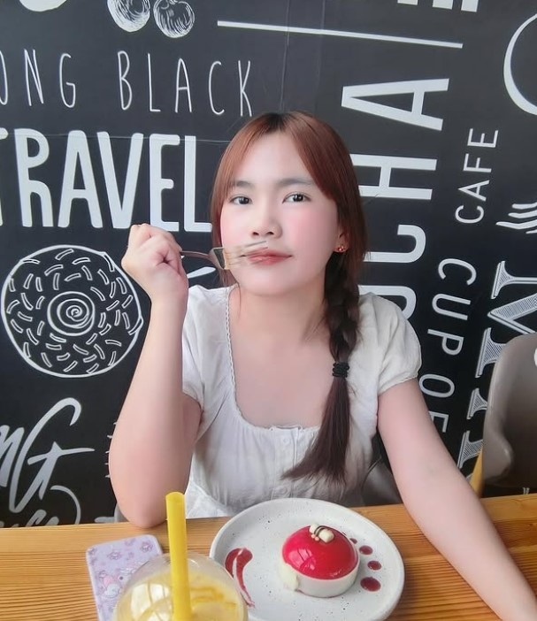

สาขา: การออกแบบสภาพแวดล้อมภายใน

Name: Name: Miss Kanyanat Meekhobthong
School : King Mongkut's Institute of Technology Ladkraban
Faculty : School of industrial Education and technology
Major :B.S.ind.Ed.intenor Environmental Design
Interior Design: Designing the interior or closed surveillance area to be aesthetically pleasing and functional according to the needs of the desired system and the use of the area. Aesthetic Design: Choosing materials, colors, furniture arrangements, and other elements to create an interesting atmosphere that is consistent with the desired style. Functional Design: Arranging room layouts, selecting appropriate furniture, and arranging systems such as lighting and air conditioning to make the area usable efficiently. Design to meet user needs: Taking into account the characteristics of the area's use, such as designing a kitchen for easy use, designing a work room for concentration.